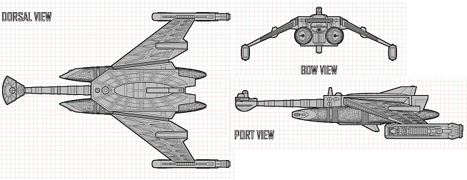

D-33 Tsunami-class Battleship (KE)

Battle Stats
Engines and Superstructure
Total Power Units - 112 (Warp Engines - 2x40, Impulse Engines - 32)
MPR - 6/1
Superstructure - 41
Maximum Warp - 3
Industry Points to Build - 10
Beam Weapons (Disruptors)
Max Power - 5
Firing Chart - X
Arcs - 3f/p, 3f/s, 2a/p, 2a/s
Bonuses - +3(1-7) +2(8-15) +1(16-22)
Missile Weapons (Photon Torpedoes)
Power to Arm - 2
Damage - 20
Firing Chart - Q
Arcs - 1F, 1A
Missile Weapons (Photon Torpedoes)
Power to Arm - 1
Damage - 15
Firing Chart - Q
Arcs - 1F/P, 1F/S
Deflector Shields
Max Shield Power - 17
SPR - 1/3